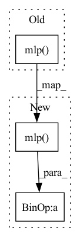

Pattern ID :3395
Before Change
if self.verbose:
print(f"x before mlp: {x}")
x = self.mlp( x)
if self.verbose:
print(f"x after mlp: {x}")
return self.propagate(edge_index, size=(x.size(0), x.size(0)), x=x)
After Change
residual = x
if self.verbose:
print(f"x before mlp: {x}")
x = self.mlp( x) + residual
if self.verbose:
print(f"x after mlp: {x}")
return self.propagate(edge_index, size=(x.size(0), x.size(0)), x=x)In pattern: SUPERPATTERN
Frequency: 9
Non-data size: 3
Instances Fragment ID: 13160600
Project Name: henry1iu/tnt-trajectory-predition
Commit Name: 2f3d77d2a8236e5c1e7c61f8e1a2235555f12e59
Time: 2021-08-22
Author: liu.jb.henry@gmail.com
File Name: core/model/layers/subgraph.py
M Class Name: GraphLayerProp
N Class Name: GraphLayerProp
M Method Name: forward(3)
N Method Name: forward(3)
M Parent Class: MessagePassing
N Parent Class: MessagePassing
M File Name: core/model/layers/subgraph.py
N File Name: core/model/layers/subgraph.py
M Start Line: 87
M End Line: 87
N Start Line: 84
N End Line: 87
Before Change
x_s = torch.cat([h_embs, r_embs, t_embs], 1)
scores = self.mlp( x_s)
return scores
def predict(self, triples):After Change
x_s = torch.cat([h_embs, r_embs, t_embs], 1)
scores = - self.mlp(x_s)
return scores
def predict(self, triples): Fragment ID: 13160601
Project Name: pykeen/pykeen
Commit Name: 250b2f879df0e00832e039447615b96cdc30e028
Time: 2018-11-04
Author: ali-mehdi@live.de
File Name: src/pykeen/kg_embeddings_model/ermlp.py
M Class Name: ERMLP
N Class Name: ERMLP
M Method Name: _compute_scores(4)
N Method Name: _compute_scores(4)
M Parent Class: nn.Module
N Parent Class: nn.Module
M File Name: src/pykeen/kg_embeddings_model/ermlp.py
N File Name: src/pykeen/kg_embeddings_model/ermlp.py
M Start Line: 67
M End Line: 68
N Start Line: 67
N End Line: 68
Before Change
@eqx.filter_jit
def __call__(self, t, y, args):
del args
return self.mlp( jnp.concatenate([t[None], y]))
class ControlledVectorField(eqx.Module):
mlp: eqx.nn.MLPAfter Change
@eqx.filter_jit
def __call__(self, t, y, args):
return self.scale * self.mlp( jnp.concatenate([t[None], y]))
class ControlledVectorField(eqx.Module):
scale: Union[int, jnp.ndarray] Fragment ID: 13160602
Project Name: patrick-kidger/diffrax
Commit Name: ed4970ce152aaba97568d1d2b970cba03b8bd4f4
Time: 2021-09-21
Author: 33688385+patrick-kidger@users.noreply.github.com
File Name: examples/neural_sde.py
M Class Name: VectorField
N Class Name: VectorField
M Method Name: __call__(4)
N Method Name: __call__(4)
M Parent Class: eqx.Module
N Parent Class: eqx.Module
M File Name: examples/neural_sde.py
N File Name: examples/neural_sde.py
M Start Line: 34
M End Line: 35
N Start Line: 44
N End Line: 44
Before Change
// compute output
att = (att_score @ v).view(batch_size, seg_len, -1)
return self.layer_norm(self.mlp( att) + x)
def circulant_shift(self, x, shift):
After Change
// compute output
att = (att_score @ v).view(batch_size, seg_len, -1)
out = self.dropout(self.mlp( att) )
return self.layer_norm(out + x)
def circulant_shift(self, x, shift):
Fragment ID: 13160604
Project Name: augustwester/transformer-xl
Commit Name: cc7f32da8e71438812e757fbe2a131b14a5cfc2f
Time: 2022-11-28
Author: august.wester@gmail.com
File Name: attention.py
M Class Name: MultiHeadAttention
N Class Name: MultiHeadAttention
M Method Name: forward(4)
N Method Name: forward(4)
M Parent Class: nn.Module
N Parent Class: nn.Module
M File Name: attention.py
N File Name: attention.py
M Start Line: 28
M End Line: 51
N Start Line: 29
N End Line: 54
Before Change
)
slots = slots.reshape(b, -1, d)
slots = self.mlp( slots)
return slots
After Change
)
slots = slots.reshape(b, -1, d)
slots = slots + self.mlp( self.norm_pre_ff(slots))
return slots
Fragment ID: 13160593
Project Name: lucidrains/slot-attention
Commit Name: 84b250146d6ffb3237d02d781e5c4215e6491940
Time: 2020-07-01
Author: lucidrains@gmail.com
File Name: slot_attention/slot_attention.py
M Class Name: SlotAttention
N Class Name: SlotAttention
M Method Name: forward(3)
N Method Name: forward(3)
M Parent Class: nn.Module
N Parent Class: nn.Module
M File Name: slot_attention/slot_attention.py
N File Name: slot_attention/slot_attention.py
M Start Line: 76
M End Line: 77
N Start Line: 61
N End Line: 62
Before Change
x_neighbors = x[batch_index,neighbor_index,:].view(bsize, num_pts, num_neighbor, feats)
x_neighbors = x_neighbors.permute(1, 0, 3, 2).contiguous()
adjweightBase = self.softmax(self.mlp( t_vertex) )
adjweight = torch.einsum("nb,bkt->nkt", adjweightBase, self.adjweight)
x_neighbors = torch.bmm(x_neighbors.view(num_pts, bsize*feats, num_neighbor), adjweight)
x_neighbors = x_neighbors.view(num_pts, bsize, feats, num_neighbor).permute(1, 0, 3, 2).contiguous()After Change
x_neighbors = x[batch_index,neighbor_index,:].view(bsize, num_pts, num_neighbor, feats)
tmpt = torch.sigmoid(self.tmptmlp(t_vertex))*(0.1 - 1.0/self.temp_factor) + 1.0/self.temp_factor
adjweightBase = self.softmax(self.mlp( t_vertex)/ tmpt)
adjweight = torch.einsum("ns,skt->nkt", adjweightBase, self.adjweight)[None].repeat(bsize, 1, 1, 1)
x_neighbors = torch.einsum("bnkf,bnkt->bnft", x_neighbors, adjweight)
x_neighbors = self.activation(x_neighbors.view(bsize*num_pts, num_neighbor*feats)) Fragment ID: 13160594
Project Name: gaozhongpai/paiconvmesh
Commit Name: 3b2bcfaebbc107eb8d769ea4c21499159ad95dee
Time: 2020-11-30
Author: gaozhongpai@gmail.com
File Name: models.py
M Class Name: PaiConvSmall
N Class Name: PaiConvSmall
M Method Name: forward(4)
N Method Name: forward(4)
M Parent Class: nn.Module
N Parent Class: nn.Module
M File Name: models.py
N File Name: models.py
M Start Line: 86
M End Line: 92
N Start Line: 136
N End Line: 141
Before Change
def forward(self, x, time_emb):
h = self.block1(x)
h += self.mlp( time_emb) [:, :, None, None]
h = self.block2(h)
return h + self.res_conv(x)
After Change
def forward(self, x, time_emb):
hiddens = [fn(x) for fn in self.blocks_in]
time_emb = self.mlp( time_emb)
time_emb = rearrange(time_emb, "b c -> b c () ()")
hiddens = [h + time_emb for h in hiddens]
hiddens = [fn(h) for fn, h in zip(self.blocks_out, hiddens)]
return sum(hiddens) + self.res_conv(x)
Fragment ID: 13160595
Project Name: lucidrains/ddpm-proteins
Commit Name: ebd886beafd02b41567703f08f729379d30598d8
Time: 2021-06-14
Author: lucidrains@gmail.com
File Name: ddpm_proteins/ddpm_proteins.py
M Class Name: ResnetBlock
N Class Name: ResnetBlock
M Method Name: forward(3)
N Method Name: forward(3)
M Parent Class: nn.Module
N Parent Class: nn.Module
M File Name: ddpm_proteins/ddpm_proteins.py
N File Name: ddpm_proteins/ddpm_proteins.py
M Start Line: 167
M End Line: 170
N Start Line: 173
N End Line: 180
Before Change
att = att.tril(mem_len) / embed_dim**0.5
att = torch.softmax(att, dim=-1)
out = self.layer_norm(self.mlp( att @ v) )
return self.pos_ff(out)
def get_sinusoid_pos_encoding(self, mem_len, embed_dim):After Change
att = torch.softmax(att, dim=-1)
// compute the output of the layer and save to memory
out = self.layer_norm(self.mlp( att @ v) + x)
out = self.pos_ff(out)
self.save_to_memory(out)
Fragment ID: 13160599
Project Name: augustwester/transformer-xl
Commit Name: 6cce5d3da48879cdef126940aa5529afcff03c9a
Time: 2022-11-21
Author: august.wester@gmail.com
File Name: attention.py
M Class Name: Attention
N Class Name: Attention
M Method Name: forward(3)
N Method Name: forward(3)
M Parent Class: nn.Module
N Parent Class: nn.Module
M File Name: attention.py
N File Name: attention.py
M Start Line: 30
M End Line: 46
N Start Line: 34
N End Line: 61